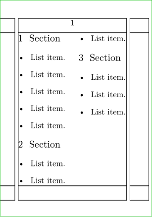

Contents
Summary
The command
\testcolumn
checks for free space in a column
Settings
Description
The command
\testcolumn
[n] causes a column break if there are not at least n lines of space remaining in the current column.
This helps avoid orphans (clubs) at the bottom of columns, by ensuring sufficient room for a given number of lines prior to starting a new heading or paragraph.
This command does not work in the simple column modes, as it needs to be able to know the desired height of the column, and that is only possible with full page style columns.
Examples
Example 1
-
\setuppapersize[A8] \showframe \setuphead[section][before={\testcolumn[3]}] \starttext \startpagecolumns \section[title={Section}] \startitemize \dorecurse{5}{ \startitem List item. \stopitem } \stopitemize \dorecurse{2}{ \section[title={Section}] \startitemize \dorecurse{3}{ \startitem List item. \stopitem } \stopitemize } \stoppagecolumns \stoptext
- 